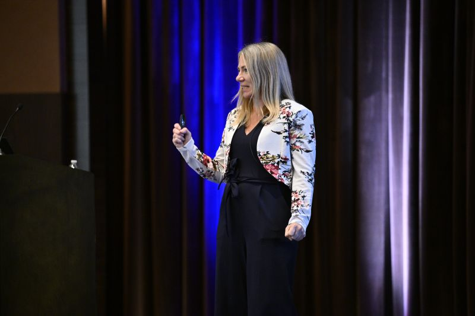

Complexity is survivable when leaders can finally name what is happening.
Move past surface-level diagnosis to the incentives, dynamics, and behavior patterns driving the issue.

Stage energy with strategic depth
Jessica Lea helps leaders turn complexity into momentum by connecting organizational behavior, strategic clarity, and live-room facilitation.
This regenerated version leans harder into the new phoenix mark: high visibility, strong motion, and a clearer invitation to book Jessica for keynotes, offsites, and leadership sessions.
Signature themes
Move past surface-level diagnosis to the incentives, dynamics, and behavior patterns driving the issue.
Turn strategic complexity into shared language that makes better decisions possible.
Facilitation is often the force that turns good strategy into visible movement.
Booking formats
Keynote
Big-picture framing on complexity, leadership behavior, and strategic clarity for high-stakes audiences.
Facilitation
Design and lead sessions that bring tension to the surface and move teams toward decisions.
Advisory
Extend the keynote into working sessions, strategic support, or transformation design.
Best rooms

About Jessica Lea
Jessica Lea works across healthcare, pharmaceutical, and consumer contexts to connect insight, organizational behavior, and decision-making so complexity becomes usable.
She brings the range of a scientist, strategist, facilitator, and operator to the same conversation, making her credible in advisory work, live leadership settings, and on stage.
Positioning line
Strategy that can hold a keynote stage, guide an offsite, and keep working after the applause.
Invitation
Replace the placeholder details below with Jessica's live email, calendar link, and LinkedIn profile to publish this keynote-first concept.
Email your-email@example.com
Booking your-calendar-link.com
LinkedIn linkedin.com/in/your-profile